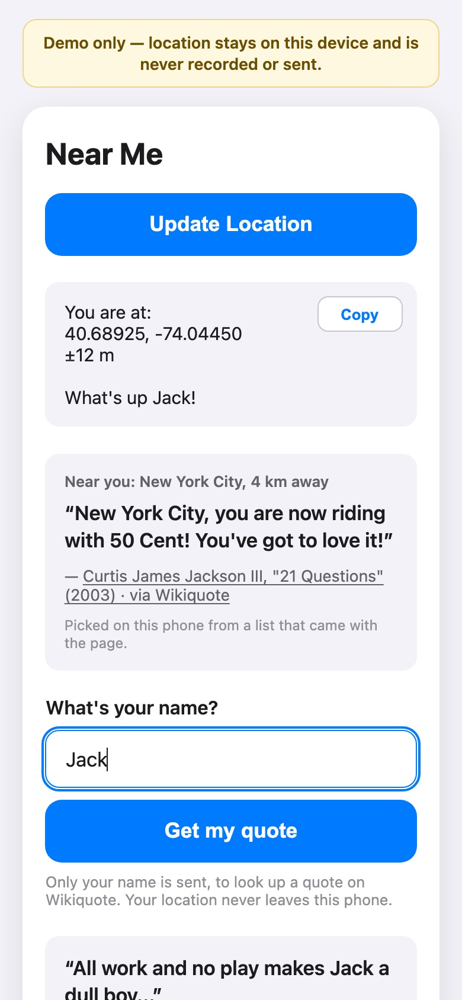

No account · no tracking · nothing stored
A famous quote about where you’re standing.
Share your location and Near Me shows you a line someone famous wrote or said about the place you’re in. Then type your name, and it finds a well-known quote that uses it.
Your location stays on your phone. Only your name is ever sent.

Three taps
Near Me is a small web app. Nothing to download from a store, and no sign-up.
Share your location
Your browser asks first. The coordinates appear on your screen and go nowhere else.
Read about your place
Near Me picks the closest town or landmark with a quote, up to 30 km away. Farther out, it uses your state, then your country.
Get a quote with your name
Type your first name. Near Me finds a real line that uses it, with who said it and where.
Your location never leaves your phone
Most location apps send where you are to a server. Near Me works the other way around: every place and every quote comes with the page, and your phone does the picking.
Stays on your phone
- Your coordinates
- Which place you’re near
- The place quote you see
Sent, only if you ask
- Your first name, to look up a quote
The quote service keeps nothing and logs no requests. It never sees your location.
171 quotes about 125 places
From Timbuktu to Lake Como. Every quote was checked by hand and links to where it came from: Wikiquote, or Bartlett’s Familiar Quotations. No AI writes a quote or a citation.
- quotes
- 171
- places
- 125
- accounts or trackers
- 0
- times your location is sent
- 0
It shows its own code
Under the quotes, Near Me shows the functions it just ran, line by line, with the values they produced. You read the code your phone actually ran, not a description of it.
This is the function that asks for a name quote. The only thing in the request is
{ name }.
async function getQuote(name) {
// Only the name is sent.
const res = await fetch(QUOTE_API, {
method: 'POST',
headers: { 'Content-Type': 'application/json' },
body: JSON.stringify({ name }),
credentials: 'omit',
referrerPolicy: 'no-referrer',
cache: 'no-store',
signal: AbortSignal.timeout(8000)
});
const data = res.ok ? await res.json() : null;
return { code: res.status, data };
}Try it where you are
Open Near Me on your phone, tap Share Location, and see what someone once said about the place you’re standing.
To keep it: open the app, then on iPhone tap Share → Add to Home Screen. On Android, tap Menu → Install app.